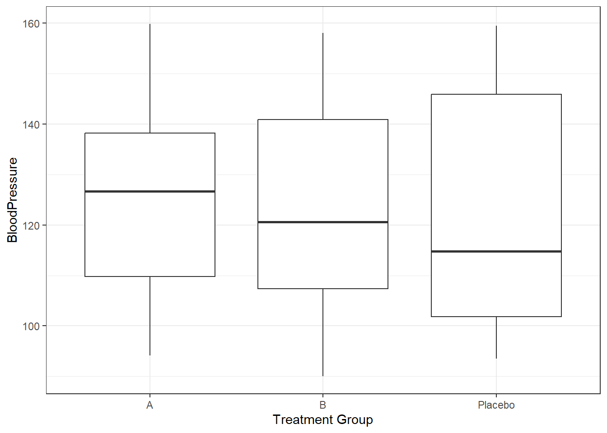
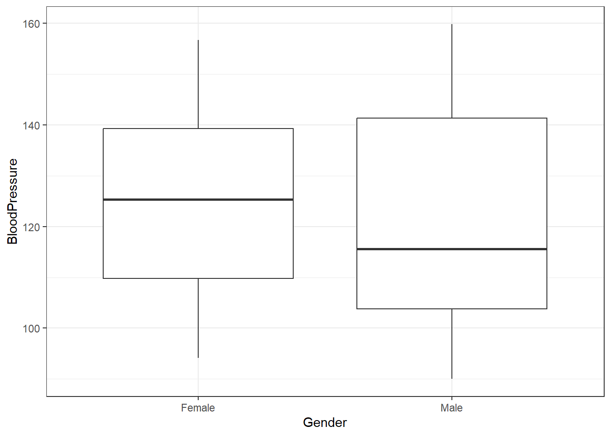
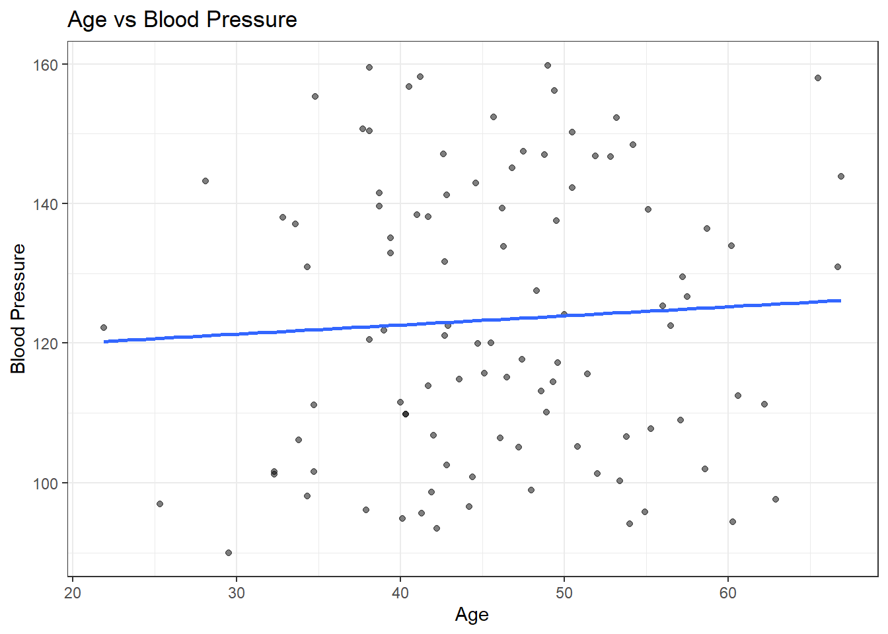

This synthetic data generation is taken from the notes while reducing the number of variables, so I can understand how to generate and explore the data better. This synthetic dataset includes basic patient-level variables such as age, gender, treatment group, and blood pressure. I wanted to explore the relationship these variables had with each other, especially how they affect blood pressure. Blood pressure was not intentially associated with any other variables and was generated randomly.
# make sure the packages are installed# Load required packageslibrary(dplyr)
Attaching package: 'dplyr'
The following objects are masked from 'package:stats':
filter, lag
The following objects are masked from 'package:base':
intersect, setdiff, setequal, union
library(purrr)library(lubridate)
Attaching package: 'lubridate'
The following objects are masked from 'package:base':
date, intersect, setdiff, union
library(ggplot2)# Set a seed for reproducibilityset.seed(123)# Define the number of observations (patients) to generaten_patients <-100syn_dat <-data.frame(PatientID =numeric(n_patients),Age =numeric(n_patients),Gender =character(n_patients),TreatmentGroup =character(n_patients),BloodPressure =numeric(n_patients))#Patient IDsyn_dat$PatientID <-1:n_patients#Age (numeric variable)syn_dat$Age <-round(rnorm(n_patients, mean =45, sd =10), 1)#Gender (categorical variable)syn_dat$Gender <- purrr::map_chr(sample(c("Male", "Female"), n_patients, replace =TRUE), as.character)#Treatment Group (categorical variable)syn_dat$TreatmentGroup <- purrr::map_chr(sample(c("A", "B", "Placebo"), n_patients, replace =TRUE), as.character)#Blood Pressure (numeric variable)syn_dat$BloodPressure <-round(runif(n_patients, min =90, max =160), 1)head(syn_dat)
PatientID Age Gender TreatmentGroup BloodPressure
1 1 39.4 Female B 135.1
2 2 42.7 Female B 131.7
3 3 60.6 Female A 112.5
4 4 45.7 Male B 152.4
5 5 46.3 Female A 133.8
6 6 62.2 Female A 111.2
Plotting
These plots explore how blood pressure varies across treatment groups, gender, and age in the synthetic dataset. Boxplots are used to compare the distribution of blood pressure by treatment group and gender, while a scatterplot with a fitted regression line illustrates the relationship between age and blood pressure.
# ggplot2 boxplot for blood pressure by treatment groupggplot(syn_dat, aes(x = TreatmentGroup, y = BloodPressure)) +geom_boxplot() +labs(x ="Treatment Group", y ="BloodPressure") +theme_bw()

# ggplot2 boxplot for blood pressure by genderggplot(syn_dat, aes(x = Gender, y = BloodPressure)) +geom_boxplot() +labs(x ="Gender", y ="BloodPressure") +theme_bw()

#ggplot2 scatterplot for blood pressure by ageggplot(syn_dat, aes(x = Age, y = BloodPressure)) +geom_point(alpha =0.5) +geom_smooth(method ="lm", se =FALSE) +labs(title ="Age vs Blood Pressure",x ="Age",y ="Blood Pressure" ) +theme_bw()
`geom_smooth()` using formula = 'y ~ x'

lm_bp <-lm(BloodPressure ~ Age + Gender + TreatmentGroup, data = syn_dat)summary(lm_bp)
Call:
lm(formula = BloodPressure ~ Age + Gender + TreatmentGroup, data = syn_dat)
Residuals:
Min 1Q Median 3Q Max
-32.470 -16.416 -2.604 15.987 39.595
Coefficients:
Estimate Std. Error t value Pr(>|t|)
(Intercept) 121.45551 11.79335 10.299 <2e-16 ***
Age 0.08979 0.22940 0.391 0.696
GenderMale -1.57000 4.11804 -0.381 0.704
TreatmentGroupB -1.56911 4.86859 -0.322 0.748
TreatmentGroupPlacebo -3.40184 5.06002 -0.672 0.503
---
Signif. codes: 0 '***' 0.001 '**' 0.01 '*' 0.05 '.' 0.1 ' ' 1
Residual standard error: 20.29 on 95 degrees of freedom
Multiple R-squared: 0.009949, Adjusted R-squared: -0.03174
F-statistic: 0.2387 on 4 and 95 DF, p-value: 0.9158
glm_bp <-lm(BloodPressure ~ Age + Gender + TreatmentGroup, data = syn_dat)summary(lm_bp)
Call:
lm(formula = BloodPressure ~ Age + Gender + TreatmentGroup, data = syn_dat)
Residuals:
Min 1Q Median 3Q Max
-32.470 -16.416 -2.604 15.987 39.595
Coefficients:
Estimate Std. Error t value Pr(>|t|)
(Intercept) 121.45551 11.79335 10.299 <2e-16 ***
Age 0.08979 0.22940 0.391 0.696
GenderMale -1.57000 4.11804 -0.381 0.704
TreatmentGroupB -1.56911 4.86859 -0.322 0.748
TreatmentGroupPlacebo -3.40184 5.06002 -0.672 0.503
---
Signif. codes: 0 '***' 0.001 '**' 0.01 '*' 0.05 '.' 0.1 ' ' 1
Residual standard error: 20.29 on 95 degrees of freedom
Multiple R-squared: 0.009949, Adjusted R-squared: -0.03174
F-statistic: 0.2387 on 4 and 95 DF, p-value: 0.9158
Additional Dataset Generation
I decided to try to generate my own completely separate dataset based on how the previous dataset was generated. This new synthetic dataset represents 250 students and includes variables such as age, gender, sleep hours, study hours, and exam scores. Exam scores were generated to increase with study hours and to vary nonlinearly with sleep hours, reflecting optimal performance around 7–8 hours of sleep.
set.seed(123)# Number of studentsn_students <-250# Generate synthetic datasyn_students <-data.frame(studentID =numeric(n_students),Age =numeric(n_students),Gender =character(n_students),SleepHours =numeric(n_students),StudyHours =numeric(n_students),ExamScore =numeric(n_students))#Student IDsyn_students$studentID <-1:n_students#Age (numeric variable)syn_students$Age <-round(rnorm(n_students, mean =20, sd =3), 1)#Gender (categorical variable)syn_students$Gender <- purrr::map_chr(sample(c("Male", "Female"), n_students, replace =TRUE), as.character)#Sleep Hours (numeric variable)syn_students$SleepHours <-round(rnorm(n_students, mean =7, sd =1.2), 1)#Study Hours (numeric variable)syn_students$StudyHours <-round(rnorm(n_students, mean =10, sd =4), 1)#Exam Scores (numeric variable) #AI was used to help generate the Exam Score Dependenciessyn_students$ExamScore <-round(50+2.5* syn_students$StudyHours +-3* (syn_students$SleepHours -7.5)^2+rnorm(n_students, mean =0, sd =8), 1 )head(syn_students)
#Save as RDSsaveRDS(syn_students, file ="synthetic_students.rds")
Plotting
The plots explore the relationships between exam scores and the student variables. Boxplots show how exam scores vary by gender, while scatterplots illustrate how exam scores change with study hours, sleep hours, and age. The study hours plot reveals a positive linear trend, the sleep hours plot shows a curved relationship with optimal performance around 7–8 hours, and the age plot shows little effect, as expected. These plots confirm that the synthetic data reflect the relationships built into the dataset.
#Boxplot of Exam Score by Genderplot1 <-ggplot(syn_students, aes(x = Gender, y = ExamScore)) +geom_boxplot(fill ="lightgreen") +labs(x ="Gender",y ="Exam Score",title ="Exam Score by Gender" ) +theme_bw()#Scatterplot: Study Hours vs Exam Scoreplot2 <-ggplot(syn_students, aes(x = StudyHours, y = ExamScore)) +geom_point(alpha =0.5, color ="darkblue") +geom_smooth(method ="lm", se =FALSE, color ="red") +labs(x ="Study Hours",y ="Exam Score",title ="Relationship Between Study Hours and Exam Score" ) +theme_bw()#Scatterplot: Sleep Hours vs Exam Score plot3 <-ggplot(syn_students, aes(x = SleepHours, y = ExamScore)) +geom_point(alpha =0.5, color ="darkorange") +geom_smooth(se =FALSE, color ="red") +labs(x ="Sleep Hours",y ="Exam Score",title ="Relationship Between Sleep Hours and Exam Score" ) +theme_bw()#Scatterplot: Age vs Exam Scoreplot4 <-ggplot(syn_students, aes(x = Age, y = ExamScore)) +geom_point(alpha =0.5, color ="purple") +geom_smooth(method ="lm", se =FALSE, color ="red") +labs(x ="Age",y ="Exam Score",title ="Relationship Between Age and Exam Score" ) +theme_bw()plots <-list(plot1, plot2, plot3, plot4)filenames <-c("gender_vs_score.png", "study_vs_score.png", "sleep_vs_score.png", "age_vs_score.png")for(i inseq_along(plots)) {ggsave(filename =file.path("figures", filenames[i]),plot = plots[[i]],width =6,height =4,dpi =300 )}
`geom_smooth()` using formula = 'y ~ x'
`geom_smooth()` using method = 'loess' and formula = 'y ~ x'
`geom_smooth()` using formula = 'y ~ x'
lm_es <-lm(ExamScore ~ SleepHours + StudyHours, data = syn_students)summary(lm_es)
Call:
lm(formula = ExamScore ~ SleepHours + StudyHours, data = syn_students)
Residuals:
Min 1Q Median 3Q Max
-37.801 -5.914 0.270 5.829 26.225
Coefficients:
Estimate Std. Error t value Pr(>|t|)
(Intercept) 21.2426 4.0735 5.215 3.89e-07 ***
SleepHours 3.6305 0.5311 6.835 6.36e-11 ***
StudyHours 2.4002 0.1490 16.112 < 2e-16 ***
---
Signif. codes: 0 '***' 0.001 '**' 0.01 '*' 0.05 '.' 0.1 ' ' 1
Residual standard error: 9.788 on 247 degrees of freedom
Multiple R-squared: 0.5499, Adjusted R-squared: 0.5463
F-statistic: 150.9 on 2 and 247 DF, p-value: < 2.2e-16
glm_es <-glm(ExamScore ~ SleepHours + StudyHours, data = syn_students, family =gaussian())summary(glm_es)
Call:
glm(formula = ExamScore ~ SleepHours + StudyHours, family = gaussian(),
data = syn_students)
Coefficients:
Estimate Std. Error t value Pr(>|t|)
(Intercept) 21.2426 4.0735 5.215 3.89e-07 ***
SleepHours 3.6305 0.5311 6.835 6.36e-11 ***
StudyHours 2.4002 0.1490 16.112 < 2e-16 ***
---
Signif. codes: 0 '***' 0.001 '**' 0.01 '*' 0.05 '.' 0.1 ' ' 1
(Dispersion parameter for gaussian family taken to be 95.80345)
Null deviance: 52574 on 249 degrees of freedom
Residual deviance: 23663 on 247 degrees of freedom
AIC: 1855
Number of Fisher Scoring iterations: 2